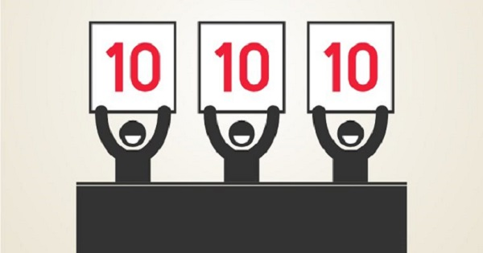
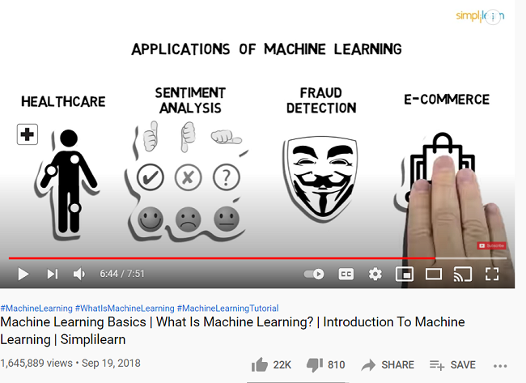

Welcome to Ulaps Presentation
Ulaps Presentation
- Topics:
- Types of Learning
- How is motivation connected to learnings like punishment and reward
- How punishment and reward can be connected with computer
- If you are a teacher and how to use this stuffs to punish or reward a human or machine
- How you teach efficient 3 to 5 techniques very useful to students
- Active and Passive learning, describe, and what is better
- Machine Learning Videos
Types of Learning
Auditory and Musical learners
This learning method focuses on hearing. (i.e choir) Auditory learners possessed a good hearing or someone who likes listening to music.
Visual and spatial learners
This kind of learning is more on images, charts/diagrams, and etc. since it’s a learning method wherein you have to look at the specific thing to create them or copy the other works. It’s also mentioned that to visual learners possessed an observant personality, or someone who enjoys visual instruction.
Verbal learner
This leaning both focuses on talking and writing. Most of the verbal learners are bookworms, have a strong vocabulary, or a good at story telling.
Logical and mathematical learner
This learning involves numbers,letters, and patterns combined. People who are logical/mathematical are good in programming, computing
Physical or kinesthetic learner
This learning is more on movements/hands-on. (i.e drummers, sports teachers, dance instructor)
Social and interpersonal learner.
This learning know how to communicate effectively and enjoy collaborating with others, brainstorming and discussing ideas and concepts
Solitary and intrapersonal learner.
This type of learning prefer to use self-study and work alone, being away from the crowds and learn best in a quiet place where they can focus on the task at hand.
How is motivation connected to learnings like punishment and reward
Motivation
is the process that initiates, guides, and maintains goal-oriented behaviors. It is what causes you to act, whether it is getting a glass of water to reduce thirst or reading a book to gain knowledge. Motivation involves the biological, emotional, social, and cognitive forces that activate behavior.

Reward
Punishment
how punishment and reward can be connected with computer
Reinforcement learning (RL) is an area of machine learning concerned with how intelligent agents ought to take actions in an environment in order to maximize the notion of cumulative reward
If you are a teacher and how to use this stuffs to punish or reward a human or machine
How you teach efficient 3 to 5 techniques very useful to students
- Interest and explanation – “When our interest is aroused in something, whether it is an academic subject or a hobby, we enjoy working hard at it. We come to feel that we can in some way own it and use it to make sense of the world around us.”
- Appropriate assessment and feedback – This principle involves using a variety of assessment techniques and allowing students to demonstrate their mastery of the material in different ways. It avoids those assessment methods that encourage students to memorize and regurgitate. It recognizes the power of feedback to motivate more effort to learn.
- Clear goals and intellectual challenge– Effective teachers set high standards for students. They also articulate clear goals. Students should know up front what they will learn and what they will be expected to do with what they know.
- Learning from students – “Effective teaching refuses to take its effect on students for granted. It sees the relation between teaching and learning as problematic, uncertain and relative.
- Independence, control and active engagement – Good teachers create learning tasks appropriate to the student’s level of understanding. They also recognize the uniqueness of individual learners and avoid the temptation to impose “mass production” standards that treat all learners as if they were exactly the same.
Active and Passive learning, describe, and what is better
Active Learning
- Active learning refers to a broad range of teaching strategies which engage students as active participants in their learning during class time with their instructor. Typically, these strategies involve some amount of students working together during class, but may also involve individual work and/or reflection.
Passive Learning
- Passive learning is a method of learning or instruction where students receive information from the instructor and internalize it. It is a method "where the learner receives no feedback from the instructor
Advantage and Disadvantages
Active Learning
- Active learning allows for frequent feedback, stimulates attention, participation and discussion, and develops critical thinking.
- Active learning does not allow for a well-planned lesson, students may become distracted and the amount of information shared is minimal.
DISAVANTAGE
Passive Learning
- Passive learning allows for more information to be presented, gives the teacher more control, and allows for an organized presentation of the topic.
- Passive learning may become boring, students become disengaged, knowledge gained may be superficial, and there is minimal feedback.
DISAVANTAGE
Which is Better?
Machine Learning Videos
What is Machine Learning? by Google Cloud Platform
Machine Learning Basic by Simplilearn.
Thank you very much!
- Presenter:
- Ricah Ranches
- Jay Tinosa
- James Tabirao
- Fernando Labayo jr.
- Al Joshua Matibag
- Carlo Caranyagan